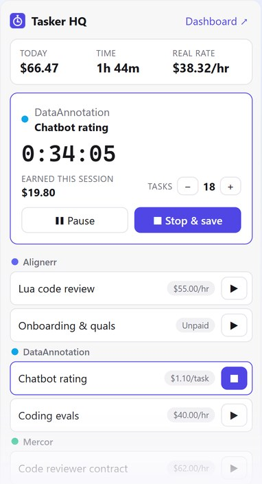
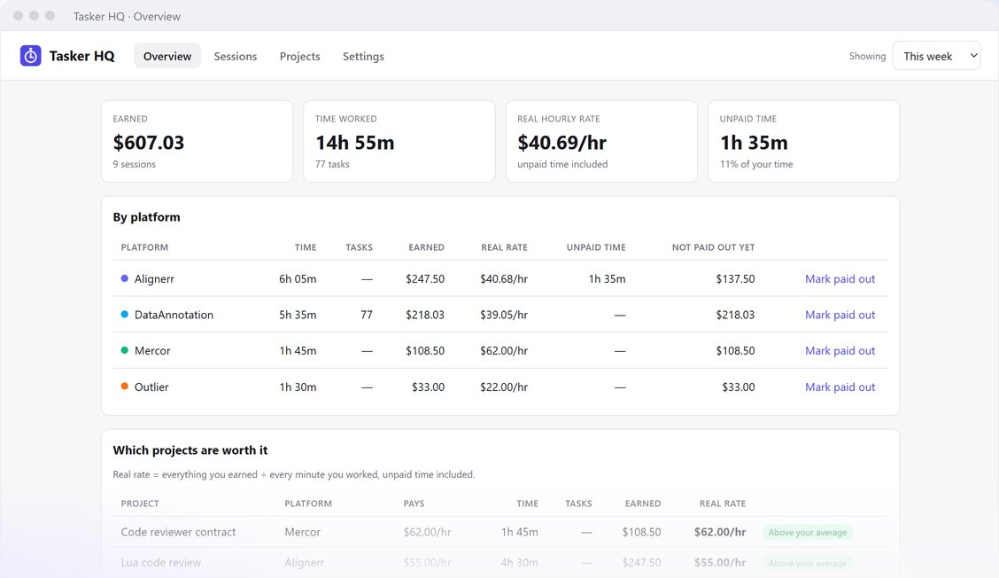
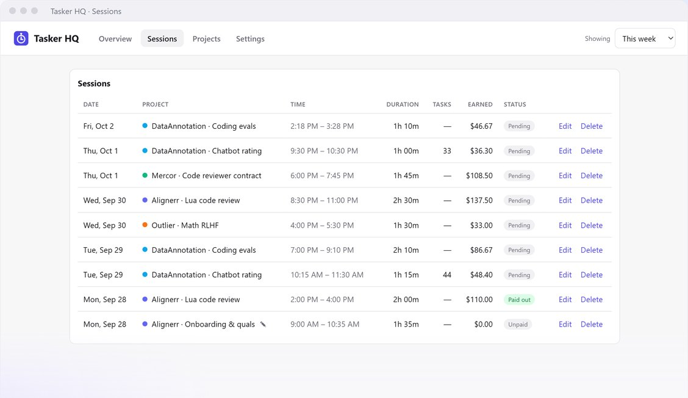

Know your real hourly rate.
Tasker HQ is a browser extension for people who do AI-training gig work. Track your time across every platform and see what you actually earn per hour, unpaid onboarding and per-task work included.
Download for Firefox Chrome or Edge? Get notifiedEarly-access Firefox build, signed by Mozilla. Open this page in Firefox and click the button, then choose Continue to installation and Add. Chrome and Edge versions are in store review; email us and we'll send you the link when they're live.
You're not on Firefox, so this button will just download a file. Open this page in Firefox to install, or use “Get notified” for Chrome and Edge.

Everything you need to track gig work
Works with Alignerr, DataAnnotation, Handshake AI, Outlier, Mercor and any other platform. You add your own projects, so it works anywhere.
One-click timer
Start and stop per project, with live earnings and a toolbar badge.
Hourly, per-task or unpaid
Count tasks with one click and log unpaid training and qualifications.
Your real rate
Everything you earned ÷ every minute you worked, by platform and project.
Auto-pause
Pauses when you step away and doesn't count time you weren't working.
Payout tracking
See what each platform still owes you and mark payouts as received.
Private by design
Never reads or touches the platforms' sites. Your data stays in your browser.


Pricing
Start free. Upgrade when you work on more than two platforms. Cancel any time.
Free
- Up to 2 platforms
- Timer, task counter and auto-pause
- Real hourly rate and payout tracking
- JSON backup and restore
Pro
- Everything in Free
- Unlimited platforms
- CSV export for taxes
- Billed monthly; cancel any time in the extension
Payments are processed securely by Stripe via ExtensionPay. See our Terms for billing, cancellation and refunds.
FAQ
- Can using it get my platform account flagged?
- Tasker HQ has no access to any gig platform's website. It doesn't read, scrape or automate their pages, so from the platform's side it's invisible, like using a stopwatch.
- Where is my data stored?
- In your browser, on your computer. We never receive your hours or earnings. See the privacy policy.
- How do I cancel Pro?
- Open the dashboard, go to Settings, and click "Manage subscription". Pro stays active until the end of the period you paid for.
- Is Tasker HQ affiliated with these platforms?
- No. It's an independent tool and isn't endorsed by any of the platforms named on this page.
- Need help?
- Email migueldelagarza100@gmail.com. We usually reply within two business days.